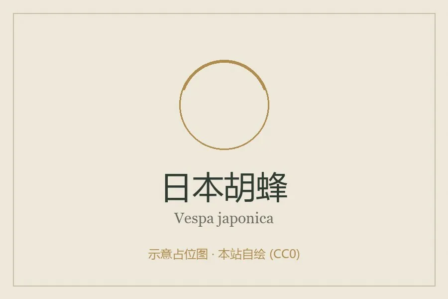

昆虫 · 动物界
日本胡蜂 Vespa japonica

日本和东亚常见的胡蜂，体色黄黑相间，筑造纸质吊巢，工蜂捕食昆虫并采集树液，被蜇后疼痛明显。
- 分类
- 门节肢动物门纲昆虫纲目膜翅目科胡蜂科属胡蜂属
- 栖息环境
- 林地、公园和居民区，巢多挂在树枝、屋檐或灌木上
- 地理分布
- 日本、朝鲜半岛和中国东部
- 保护级别
- IUCN 暂无评估；中国未列入国家重点保护名录
物种志
日本胡蜂蜂王体长 2–2.5 cm，工蜂略小，体色黄黑相间，胸部以黑色为主，腹部有黄色环带，翅呈半透明褐色；上颚发达，尾端有毒针，可多次蜇刺。它与常见的黄脚胡蜂外形相近，但腹部斑纹和体色比例不同。
它分布在日本、朝鲜半岛和中国东部，栖息于林地、公园和居民区，春夏筑造纸质的吊巢，巢多挂在树枝、屋檐或灌木上。工蜂捕食毛虫、蝇类等昆虫，也采集树液和花蜜，秋季群体达到高峰，雄蜂和新蜂王交配后，越冬蜂王独自寻找隐蔽处过冬。日本胡蜂护巢性强，被蜇后局部红肿疼痛，过敏体质者可能出现严重反应，应避免靠近蜂巢；它的巢材是嚼碎的树皮和木纤维，目前尚无保护评估。
形态与习性
- 食性捕食毛虫、蝇类，也采集树液和花蜜
- 体长蜂王 2–2.5 cm，工蜂略小
- 识别体色黄黑相间，胸部以黑色为主
- 筑巢用嚼碎的树皮和木纤维筑纸质吊巢
- 生活史秋季产生新蜂王，蜂王独自越冬
- 防御护巢性强，尾针可多次蜇刺
趣味知识
- 日本胡蜂的巢是用嚼碎的树皮和木纤维糊成的纸质吊巢。
- 它的尾针可以反复蜇刺，护巢时会群起攻击靠近的人。
- 每年秋天，新蜂王交配后独自越冬，来年再建立新巢。